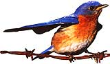
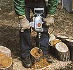
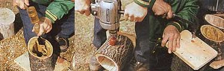
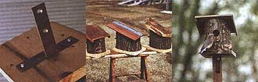

You and Mother Nature can turn a dead tree into an attractive birdhouse.
Building bluebird houses from renewable resource materials isn't fooling with Mother Nature-it's playing right into her hand. Several years ago I got the idea to make bluebird houses out of natural wood blocks. After all, they often look for nests in hollows of abandoned trees, so I figured this would be the next best thing. I've tried out quite a few at this point, and bluebirds just love them. No special talent is required to make these attractive houses, and all you need are a few regular shop tools.
Materials:
-dead tree, 6" to 7" diameter
-
course-toothed hand saw or chain saw
-electric drill
-wood bit
-mallet
-chisel
-8 6d coated nails
-4" T-iron
-3 3/4" screws
Construction
To begin, find a dead tree approximately 6" to 7" in diameter. Using a coarse-toothed hand saw (or chain saw), cut a block of wood that is 7" at its longest end, sloping down to 5" at its shortest. This angle will provide a sufficient slope for water runoff once the roof is attached. As you are cutting, leave the bark intact to give the house a more natural appearance.
Next, use an electric drill and a suitably large wood bit to hog out the centers for the nest compartment. Leave approximately 1" of wood on the sides (the inside walls) to ensure strength and durability. Then finish cleaning out the interior with a mallet and chisel; this need not be done to perfection.
While you have the drill handy, cut the main entrance hole centered 3" from the bottom, 1 1/2" in diameter. Use a 3/8 drill to make a few ventilation holes at the back of the house, approximately a 1/2" from the top.
The roof board will prevent rain from entering these holes as air flows through. Now you're ready to make the bottom of your birdhouse. Cut a piece of 1 x 4 board approximately 1/2" wider and 1 1/2" longer than the diameter of the block of wood you have chosen. Nail this board securely to the base of the house with your 6d coated nails. Use at least eight nails to prevent any warping of the wood as it weathers. Next, bend a 4" T-iron and fasten it with three 3/4" screws to the underside of the baseboard.
Later the projecting leg of the T-iron will be used to attach the birdhouse to a pole. A variety of roof styles may be used to cover the bluebird house, all of which work well and last for years. Each has its own aesthetic appearance (see photos). Be sure the roof is large enough to span at least 1" wider than each side and back, and 2" in the front. Don't worry about making your roof airtight because it's best to have some ventilation anyway.
The parent bird will protect the young by covering them during cool weather. For a quick and easy roof, cut a natural slab of wood from the side of a log using a chain saw; you can cut several pieces within minutes. A piece of common cedarwood shingle of proper size also works well. Then use brass screws to make the roof piece detachable, so you'll be able to clean the birdhouse as required. Timely cleaning, between seasons or broods, is necessary to help prevent diseases and bug or worm infestations.
All you need are a few regular shop tools to
build this charming bluebird home.Where and When to Put It Up
Bluebirds are native to North America and can be found from Alaska to Canada, south to Nicaragua. While bluebirds will occupy houses close to buildings inhabited by humans, they usually prefer some distance from such locations. They are partial to open woodlands, orchards, farmyards, and rural routes. Pasture or field-fence rows are ideal locations. While you can construct the house any time of year, they should be erected in spring and summer.
Be sure you place them far enough from farm buildings so sparrows aren't a threat; sparrows are approximately the size of a bluebird, and usually prevail when competing for a nesting site. I also place the houses where some natural shade from a small tree is available, but this isn't necessary. Face the entrance hole towards the south. Because morning sun is less intense than midday or afternoon sun, a slight southeasterly direction may be best. For those who plan to take pictures of the bluebird house while in use, good lighting and access are important.
While rearing their young, bluebirds will become accustomed to humans but visitations should be limited to the time when eggs are being hatched. (An interesting fact: Both male and female bluebirds will incubate the eggs as well as feed the young.) As for predators, they shouldn't be much of a problem. If you're worried, use steel pipes to erect the house; otherwise use common wood poles or fence posts. Wood posts permit easiest attaching and removal. Place the house approximately 5' to 6' feet high. Because bluebirds are such charming visitors, you may want to put up a whole bunch of houses around your yard and create a small bluebird community.
How to Spot Them
You can't mistake the Eastern bluebird with its distinguished warble voice and bright blue plumage above its reddish breast. (Females are a bit duller in color.) But just in case, here are a few statistics: Adults measure approximately 6" to 7" in size. Look for their slender bills, chunky bodies, short tails, and stout legs. Bluebirds also love to perch, so get those birdhouses up and your cameras out.
Bionote: Norman E. Johnson is a freelance writer and photographer, as well as a member of the Outdoor Writers Association of America. He lives in rural Wisconsin and takes great delight in attracting bluebirds to his home.
|
 Remove center wood for space to nest. |
 Clean drilled-out center with chisel (left), drill an opening in side of block (center), and attach base board to house with 6d coated nails (right). |
 A bent ""T"" iron provides extra support (left); there are several options when it comes to angling the roof (center); house gets a final inspection (rot). |
|
 |
|
|